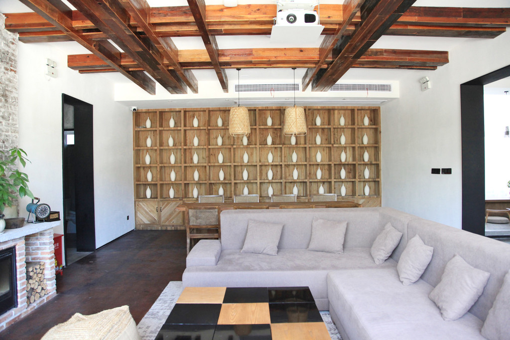
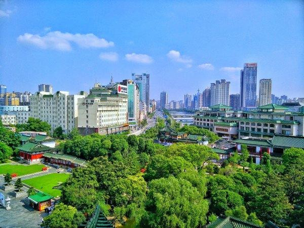
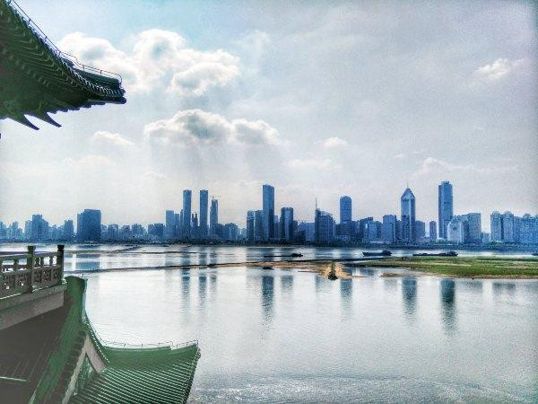

工作很忙似乎成为了大部分当代人的“通病”，尤其是对于有一点点小小事业的我来讲。现阶段的我，周末对我来说都是很奢侈的，毕竟在一般情况下，周末也会排的满满的。
然而，有时候也要给自己放个假，找个精品民宿住一住，周边逛一逛，也是很享受的。

上周末，我就是这样度过的，在途家上定了一个民宿，逛了逛滕王阁，度过了一个完美的周末！
8年前，我还在本科大二的学习阶段，到南昌来游玩的时候，第一站便是去了滕王阁，那个时候我的两个好朋友“老熊”和“小鸟”，也都在南昌上大学，他们翘课陪我出游的场景至今仍历历在目……
如今，已经生活在这个城市，时常也会出去走走，少不了的还是这里——滕王阁。
初唐诗人王勃诗句“落霞与孤鹜齐飞，秋水共长天一色”使得滕王阁流芳后世。此阁因王勃的《滕王阁序》为后人熟知，成为永世的经典。也许你不是很熟知王勃，但滕王阁，你应该听说过。
这座楼阁历史悠久，唐贞观十三年，唐高祖李渊第二十二子、唐太宗李世民之弟李元婴被封于山东滕州，为滕王。他于滕州筑一阁楼名曰“滕王阁”（已被毁）。唐显庆四年，滕王李元婴调任江南洪州（今江西南昌）都督。因其思念故地滕州，修筑了著名的“滕王阁”。
立于滕王阁之上，可见赣江对面的南昌市全景，倚靠一江水，坐拥一座城！
滕王阁与湖南岳阳市的岳阳楼、湖北武汉市的黄鹤楼和被人们称为“江南三大名楼”。楼阁是我国古代的一种传统建筑，“楼，重房也”；“阁，楼也”。这就是说，楼阁一般都是两层或两层以上的建筑，且都以木质为主要结构。
滕王阁也是古代储藏经史典籍的地方，从某种意义上来说是古代的图书馆。而封建士大夫们迎送和宴请宾客也多喜欢在此，贵为天子的明代开国皇帝朱元璋在鄱阳湖之战大胜陈友谅后，曾设宴阁上，命诸大臣、文人赋诗填词，观看灯火。
滕王阁在古代被人们看作是吉祥风水建筑，有古谣云：“藤断葫芦剪，塔圮豫章残”。“藤”谐“滕”音，指滕王阁；“葫芦”，乃藏宝之物；“塔”，指绳金塔；“圮”，倒塌之意；“豫章”亦即南昌。这首古谣的意思是，如果滕王阁和绳金塔倒塌，豫章城中的人才与宝藏都将流失，城市亦将败落，不复繁荣昌盛。

“时来风送滕王阁”，滕王阁因“初唐四杰”之首的王勃一篇骈文——《秋日登洪府滕王阁饯别序》（简称《滕王阁序》）而得以名贯古今，誉满天下。王勃的《滕王阁序》，脍炙人口，传诵千秋。文以阁名，阁以文传，历千载沧桑而盛誉不衰。自王勃的“千古一序”之后，王绪曾为滕王阁作《滕王阁赋》，王仲舒又作《滕王阁记》，传为“三王记滕阁”的佳话。后大文学家韩愈又作《新修滕王阁记》。由此王勃、韩愈等人开创了“诗文传阁”的先河，使之后来的文人学士登阁题诗作赋相沿成习。

古代习俗中，人口聚居之地需要风水建筑，一般为当地最高标志性建筑，聚集天地之灵气，吸收日月之精华，俗称：“文笔峰”。滕王阁坐落于赣水之滨，被古人誉为“水笔”，有古人亦云：“求财万寿宫，求福滕王阁”。可见滕王阁在世人心目中占据的神圣地位，历朝历代无不备受重视和保护。
如今，滕王阁正义一个新的面貌迎接世人，这个南昌市乃至江西省的地标，孕育的文化与神奇正吸引着国内外一批批的游客纷至沓来。
大概，你也会慕名而来吧……
TIPS：旅游指南
开放时间
7：30—17：30
门票：50元（本科学生半价，当地居民半价，60岁以上老人免票）
交通：
市区乘公交到滕王阁
2路（火车站——滕王阁——火车站）
7路（京东公交停车场——滕王阁——京东公交停车场）
8路（塘山——滕王阁——抚河桥）
302路（火车站——滕王阁——火车站）
20路（八一桥——滕王阁——八大山人纪念馆）
26路公交（心雨花园——滕王阁——心雨花园）可达。
轨道交通
南昌轨道交通一号线中山桥站步行至滕王阁。